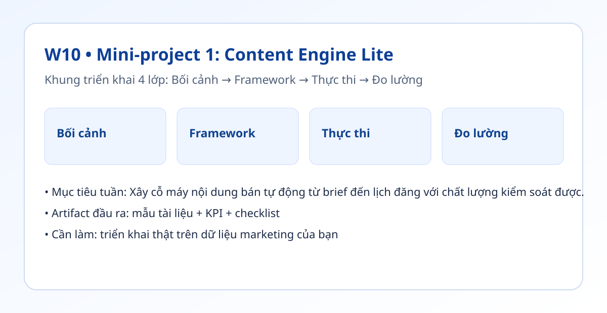

Hình trực quan mô-đun

Bối cảnh thực tế
- Đội nội dung thường mất nhiều thời gian ở khâu ý tưởng và soạn nháp.
- Nếu có hệ thống chuẩn, marketer tập trung vào chiến lược và bài học thị trường thay vì làm tay.
- Tuần này bạn tạo một hệ thống nội dung chạy được trong ngữ cảnh thật.
Khung tư duy cốt lõi
- Luồng 5 bước: Brief chuẩn → Ý tưởng → Bản nháp → QA → Hàng đợi xuất bản.
- Tách rõ nơi chứa dữ liệu: brief, bản nháp, trạng thái QA, lịch xuất bản.
- Mọi đầu ra phải có trạng thái để theo dõi.
Quy trình triển khai chi tiết
- Bước 1: Tạo bảng
content_briefsvới cột chuẩn (chân dung khách hàng, mục tiêu, CTA, hạn chót). - Bước 2: Dùng tự động hóa gọi AI sinh 2 ý tưởng + 1 bản nháp cho mỗi brief.
- Bước 3: QA theo checklist tuần 6 và chấm trạng thái ĐẠT/CẦN SỬA.
- Bước 4: Đẩy đầu ra đạt chuẩn vào lịch xuất bản theo tuần.
- Bước 5: Theo dõi KPI thời gian và tỷ lệ đúng lịch.
- Bước 6: Tối ưu prompt khi tỷ lệ ĐẠT dưới mục tiêu.
Tình huống nhỏ với số liệu
| KPI | Trước | Sau 2 tuần |
|---|---|---|
| Tổng giờ sản xuất tuần | 6 giờ | 3.5 giờ |
| Xuất bản đúng lịch | 60% | 85% |
| Qua QA vòng 1 | 55% | 80% |
Kết luận: Content Engine Lite giúp giảm tải sản xuất, đồng thời vẫn giữ được kiểm soát chất lượng qua QA.
Sản phẩm bàn giao tuần này
- Bảng brief + bản nháp + trạng thái QA.
- Lịch đăng nội dung theo tuần.
- Bảng điều khiển mini cho tốc độ và chất lượng.
Bài tập thực hành (45-60 phút)
- Chạy hệ thống với 6 brief trong 1 tuần.
- Đo thời gian từng bước và tỷ lệ QA ĐẠT.
- Viết báo cáo 1 trang: điều gì nên giữ, điều gì cần cải tiến.
Thang đo hoàn thành
| Mức | Mô tả |
|---|---|
| Mức 0 | Chưa chạy luồng thật |
| Mức 1 | Chạy được nhưng thiếu QA |
| Mức 2 | Có QA + KPI theo dõi |
| Mức 3 | Giảm >=30% thời gian và tăng đúng lịch |
Lỗi thường gặp
- Brief chưa chuẩn nên đầu ra lệch.
- Không có hàng đợi xuất bản rõ ràng.
- Không theo dõi trạng thái QA theo từng bài.
Video thực hành (tùy chọn)
Phần học chính đã đầy đủ bằng văn bản và ví dụ. Nếu bạn muốn xem thao tác thực tế, dùng các video gợi ý sau:
Đánh dấu tiến độ
Tuần này chưa hoàn thành
Đã hoàn thành tuần 10